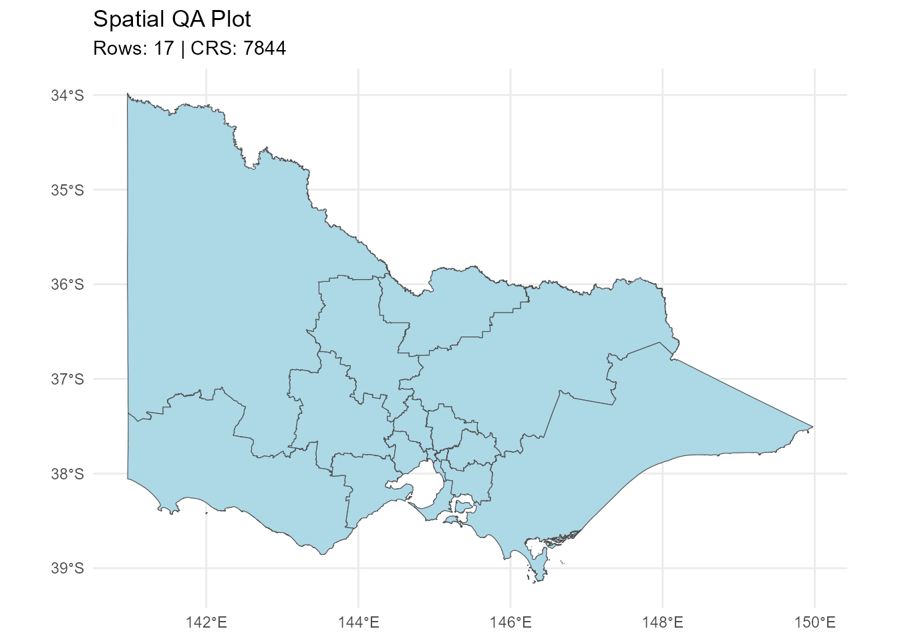

library(etlspatial)
library(sf)
#> Linking to GEOS 3.13.1, GDAL 3.11.4, PROJ 9.7.0; sf_use_s2() is TRUE
library(DBI)
library(duckdb)
#> Warning: package 'duckdb' was built under R version 4.5.3etlspatial is a lightweight spatial ETL framework for
building reproducible, production-ready geospatial workflows in R.
It provides a consistent interface for reading, standardising, and writing spatial data across ESRI formats (file geodatabases and shapefiles) and open formats such as GeoPackage, with integrated DuckDB support for scalable analytics.
The package is designed to be engine-agnostic, portable, and robust to changes in data source environments.
Spatial Format Support
etlspatial supports both ESRI-native and open spatial
formats:
- ESRI File Geodatabases (
.gdb) - ESRI Shapefiles (
.shp) - GeoPackage (
.gpkg)
GeoPackage is fully supported as a portable, open standard, enabling workflows to run in environments where ESRI-specific formats are not available.
All formats are handled through a consistent interface, allowing ETL workflows to remain stable regardless of the underlying storage type.
Load Demo Data
A small, package-safe demo dataset is included to demonstrate core functionality.
The dataset contains ABS SA4 boundaries for Victoria (GDA2020), stored as a GeoPackage.
# Load demo data
demo_path <- system.file(
"extdata",
"abs_sa4_vic_demo.gpkg",
package = "etlspatial"
)
sa4 <- read_esri_layer(
dsn = demo_path,
layer = "abs_sa4_vic_demo",
quiet = TRUE
)
dplyr::glimpse(sa4, width = 80)
#> Rows: 17
#> Columns: 15
#> $ sa4_code_2021 <chr> "201", "202", "203", "204", "205", "206", "207", "2…
#> $ sa4_name_2021 <chr> "Ballarat", "Bendigo", "Geelong", "Hume", "Latrobe …
#> $ change_flag_2021 <chr> "0", "0", "0", "0", "0", "0", "0", "0", "0", "0", "…
#> $ change_label_2021 <chr> "No change", "No change", "No change", "No change",…
#> $ gccsa_code_2021 <chr> "2RVIC", "2RVIC", "2RVIC", "2RVIC", "2RVIC", "2GMEL…
#> $ gccsa_name_2021 <chr> "Rest of Vic.", "Rest of Vic.", "Rest of Vic.", "Re…
#> $ state_code_2021 <chr> "2", "2", "2", "2", "2", "2", "2", "2", "2", "2", "…
#> $ state_name_2021 <chr> "Victoria", "Victoria", "Victoria", "Victoria", "Vi…
#> $ aus_code_2021 <chr> "AUS", "AUS", "AUS", "AUS", "AUS", "AUS", "AUS", "A…
#> $ aus_name_2021 <chr> "Australia", "Australia", "Australia", "Australia",…
#> $ area_albers_sqkm <dbl> 10287.4757, 11841.9058, 4428.6990, 34006.4765, 4155…
#> $ asgs_loci_uri_2021 <chr> "http://linked.data.gov.au/dataset/asgsed3/SA4/201"…
#> $ shape_length <dbl> 8.7553977, 9.0049525, 5.5614123, 16.2108144, 22.860…
#> $ shape_area <dbl> 1.04653769, 1.19267658, 0.45494805, 3.43271852, 4.2…
#> $ geom <MULTIPOLYGON [°]> MULTIPOLYGON (((143.8977 -3..., MULTIP…QA Check
Run a quick spatial summary:
qa_spatial_summary(sa4)
#>
#> ── Spatial QA Summary ──
#>
#> Rows: 17
#> Columns: 15
#> Geometry column: geom
#> Geometry type: MULTIPOLYGON
#> CRS: 7844 - GDA2020
#> Valid geometries: 17
#> Invalid geometries: 0
#> Empty geometries: 0
#> # A tibble: 1 × 14
#> dataset rows columns geom_column geom_type crs_epsg crs_name valid_geometries
#> <chr> <int> <int> <chr> <chr> <int> <chr> <int>
#> 1 NA 17 15 geom MULTIPOL… 7844 GDA2020 17
#> # ℹ 6 more variables: invalid_geometries <int>, empty_geometries <int>,
#> # xmin <dbl>, ymin <dbl>, xmax <dbl>, ymax <dbl>Optional quick plot:
qa_spatial_plot(sa4)
#> ℹ Spatial QA plot generated
Create DuckDB Connection
The dataset is written to DuckDB using WKT-based geometry storage.
Create a temporary DuckDB database:
Write to DuckDB
write_sf_to_duckdb(
x = sa4,
con = con,
table_name = "sa4_vic"
)
#> Note: method with signature 'DBIConnection#Id' chosen for function 'dbExistsTable',
#> target signature 'duckdb_connection#Id'.
#> "duckdb_connection#ANY" would also be valid
#> ✔ DuckDB table written: spatial.sa4_vic
#> Rows: 17
#> Geometry WKT column: geom_wkt
#> CRS: 7844
#> Geometry type: MULTIPOLYGONRead from DuckDB
Reconstruct the sf object:
sa4_from_db <- read_sf_from_duckdb(
con = con,
table_name = "sa4_vic"
)
#> ✔ Read sf from DuckDB: spatial.sa4_vic
dplyr::glimpse(sa4_from_db, width = 80)
#> Rows: 17
#> Columns: 15
#> $ sa4_code_2021 <chr> "201", "202", "203", "204", "205", "206", "207", "2…
#> $ sa4_name_2021 <chr> "Ballarat", "Bendigo", "Geelong", "Hume", "Latrobe …
#> $ change_flag_2021 <chr> "0", "0", "0", "0", "0", "0", "0", "0", "0", "0", "…
#> $ change_label_2021 <chr> "No change", "No change", "No change", "No change",…
#> $ gccsa_code_2021 <chr> "2RVIC", "2RVIC", "2RVIC", "2RVIC", "2RVIC", "2GMEL…
#> $ gccsa_name_2021 <chr> "Rest of Vic.", "Rest of Vic.", "Rest of Vic.", "Re…
#> $ state_code_2021 <chr> "2", "2", "2", "2", "2", "2", "2", "2", "2", "2", "…
#> $ state_name_2021 <chr> "Victoria", "Victoria", "Victoria", "Victoria", "Vi…
#> $ aus_code_2021 <chr> "AUS", "AUS", "AUS", "AUS", "AUS", "AUS", "AUS", "A…
#> $ aus_name_2021 <chr> "Australia", "Australia", "Australia", "Australia",…
#> $ area_albers_sqkm <dbl> 10287.4757, 11841.9058, 4428.6990, 34006.4765, 4155…
#> $ asgs_loci_uri_2021 <chr> "http://linked.data.gov.au/dataset/asgsed3/SA4/201"…
#> $ shape_length <dbl> 8.7553977, 9.0049525, 5.5614123, 16.2108144, 22.860…
#> $ shape_area <dbl> 1.04653769, 1.19267658, 0.45494805, 3.43271852, 4.2…
#> $ geom <MULTIPOLYGON [°]> MULTIPOLYGON (((143.8977 -3..., MULTIP…Check DuckDB Registry
View ETL registry:
etl_duckdb_registry(duckdb_path)
#>
#> ── DuckDB spatial registry ─────────────────────────────────────────────────────
#> Database: file576c488442bc.duckdb
#> Registered tables: 1
#> table_name source_type geom_type crs row_count created_at
#> 1 sa4_vic sf MULTIPOLYGON 7844 17 2026-05-14 21:47:27Write Back to Spatial Format
Example: write to GeoPackage.
sa4_from_db <- sf::st_set_crs(sa4_from_db, 7844)
out_path <- tempfile(fileext = ".gpkg")
write_esri_layer(
x = sa4_from_db,
dsn = out_path,
layer = "sa4_vic_output",
quiet = TRUE
)Example: Continue the Workflow with sf
Once data is written to DuckDB and read back as an sf
object, it can be used directly in normal spatial workflows.
This example creates centroid points from the SA4 polygons and writes the result back to DuckDB.
# Ensure CRS is correctly assigned after reading from DuckDB
sa4_from_db <- sf::st_set_crs(sa4_from_db, 7844)
# Validate and normalise geometry for this processing step
sa4_clean <- sa4_from_db |>
sf::st_make_valid()
# Create representative points safely inside each polygon
sa4_points <- sa4_clean |>
sf::st_point_on_surface()
sf::st_crs(sa4_points)$epsg
#> [1] 7844
dplyr::glimpse(sa4_points, width = 80)
#> Rows: 17
#> Columns: 15
#> $ sa4_code_2021 <chr> "201", "202", "203", "204", "205", "206", "207", "2…
#> $ sa4_name_2021 <chr> "Ballarat", "Bendigo", "Geelong", "Hume", "Latrobe …
#> $ change_flag_2021 <chr> "0", "0", "0", "0", "0", "0", "0", "0", "0", "0", "…
#> $ change_label_2021 <chr> "No change", "No change", "No change", "No change",…
#> $ gccsa_code_2021 <chr> "2RVIC", "2RVIC", "2RVIC", "2RVIC", "2RVIC", "2GMEL…
#> $ gccsa_name_2021 <chr> "Rest of Vic.", "Rest of Vic.", "Rest of Vic.", "Re…
#> $ state_code_2021 <chr> "2", "2", "2", "2", "2", "2", "2", "2", "2", "2", "…
#> $ state_name_2021 <chr> "Victoria", "Victoria", "Victoria", "Victoria", "Vi…
#> $ aus_code_2021 <chr> "AUS", "AUS", "AUS", "AUS", "AUS", "AUS", "AUS", "A…
#> $ aus_name_2021 <chr> "Australia", "Australia", "Australia", "Australia",…
#> $ area_albers_sqkm <dbl> 10287.4757, 11841.9058, 4428.6990, 34006.4765, 4155…
#> $ asgs_loci_uri_2021 <chr> "http://linked.data.gov.au/dataset/asgsed3/SA4/201"…
#> $ shape_length <dbl> 8.7553977, 9.0049525, 5.5614123, 16.2108144, 22.860…
#> $ shape_area <dbl> 1.04653769, 1.19267658, 0.45494805, 3.43271852, 4.2…
#> $ geom <POINT [°]> POINT (143.823 -37.3437), POINT (144.0131 -36…Write the centroid layer to DuckDB.
write_sf_to_duckdb(
x = sa4_points,
con = con,
table_name = "sa4_vic_points",
overwrite = TRUE
)
#> ✔ DuckDB table written: spatial.sa4_vic_points
#> Rows: 17
#> Geometry WKT column: geom_wkt
#> CRS: 7844
#> Geometry type: POINTConfirm the new layer is tracked in the DuckDB registry.
etl_duckdb_registry(duckdb_path)
#>
#> ── DuckDB spatial registry ─────────────────────────────────────────────────────
#> Database: file576c488442bc.duckdb
#> Registered tables: 2
#> table_name source_type geom_type crs row_count created_at
#> 1 sa4_vic_points sf POINT 7844 17 2026-05-14 21:47:31
#> 2 sa4_vic sf MULTIPOLYGON 7844 17 2026-05-14 21:47:27Close DuckDB Connection
DBI::dbDisconnect(con, shutdown = TRUE)Summary
This workflow demonstrates:
- Reading spatial data from GeoPackage
- Standardising and validating geometry
- Writing and retrieving spatial data via DuckDB
- Continuing spatial analysis using
sf
The package supports reproducible, portable spatial ETL workflows for:
- Spatial analytics
- Risk modelling
- Spatial epidemiology
- Large-scale geospatial processing